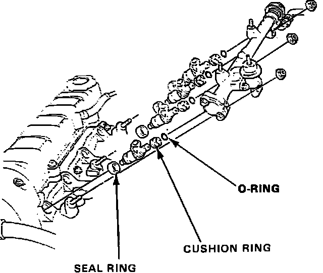
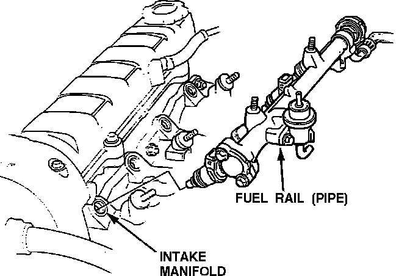
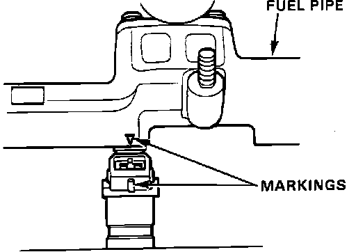

Fuel Injector: Service and Repair
WARNING: DO NOT smoke while working on the fuel system. Keep open flame away from your work area. Make sure the engine is OFF before relieving fuel pressure.1. Place a shop towel under and around the fuel filter.
2. Relieve the fuel pressure.
a. Disconnect the negative battery cable.
b. Remove the fuel tank filler cap.
c. Use a box end wrench on the 6mm service bolt at the top of the fuel filter, while holding the special banjo bolt with another wrench.
Fuel Filter:

d. Place a rag or shop towel over the 6mm service bolt and SLOWLY loosen the 6mm service bolt one complete turn.
NOTE: Always replace the washer between the service bolt and the special banjo bolt, whenever the service bolt is loosened to relieve fuel pressure. Replace all washers whenever the bolts are removed to disassemble parts.
3. Disconnect the electrical connectors from the Fuel Injectors.
4. Disconnect the vacuum hose and fuel return line from the pressure regulator.
NOTE: Place a rag or shop towel over the hose and tube before disconnecting them.
5. Loosen the retainer nuts on the fuel rail (pipe) and remove the fuel supply line.
6. Disconnect the fuel rail (pipe).
7. Remove the Fuel Injectors from the intake manifold.
Fuel Injector Replacement:

8. Slide new cushion rings onto the Injectors.
9. Coat new O-rings with clean engine oil and put them on the Injectors.
10. Insert the Injectors into the fuel rail (pipe) first.
11. Coat the new seal rings with clean engine oil and press them into the intake manifold.
12. Install the Fuel Injectors and fuel rail (pipe) assembly onto the manifold.
CAUTION: To prevent damage to the O-ring, install the Fuel Injectors in the fuel rail (pipe) first. Then install the assembly onto the intake manifold.
Fuel Pipe:

Fuel Injector Markings:

13. Align the center line on the Fuel Injector connector with the mark on the fuel rail (pipe).
14. Install and tighten the retainer nuts and the fuel supply line.
15. Connect the vacuum hose and the fuel return line to the pressure regulator.
16. Install the electrical connectors onto the Fuel Injectors.
17. Turn the ignition switch ON but do not operate the starter. After the fuel pump runs for approximately two (2) seconds, the fuel pressure rises. Repeat this two or three times, then check for fuel leaks.